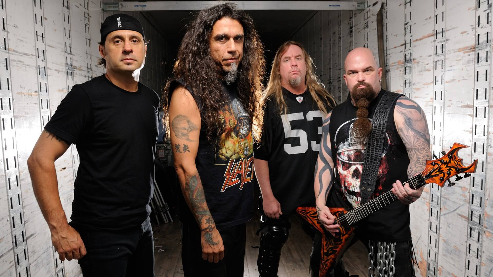

Thrash Metal
Fue uno de los primeros subgéneros del heavy metal en aparecer, siendo el tema Stone Cold Crazy de Queen una pieza referencial para el futuro sonido del thrash metal publicada en 1974 . De esta forma, el thrash metal es la base y la mayor influencia en el metal extremo, donde se incluye principalmente al death metal y el black metal, además de tener un importante desarrollo (junto con el speed metal) en el power metal, si bien este estilo llevó la música por un camino más melódico.
También el género ha influido peculiarmente en otros subgéneros como el metalcore, esto lo demuestran bandas como Trivium, Unearth o Chimaira como algunos de los ejemplos más populares. Cabe resaltar la importancia en la creación y evolución del género de las bandas primigenias mejor conocidas como Los cuatro grandes del thrash metal (Metallica, Megadeth, Slayer y Anthrax), las cuales son consideradas las más representativas y en un orden fundacional.